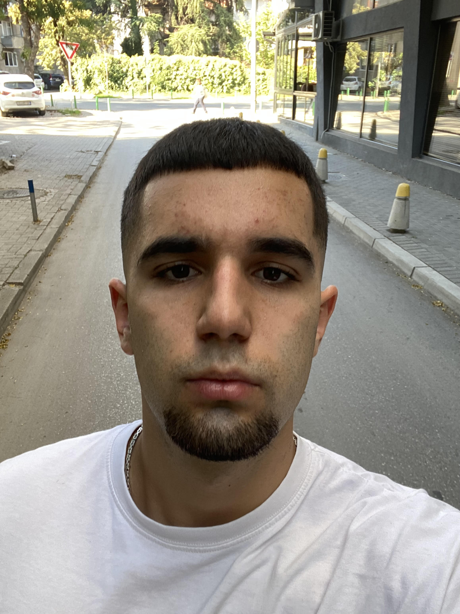

За мене

Јас сум студент на ФИНКИ, пасиониран за веб развој, програмирање и технологија. Верувам во моќта на знаењето и практичната примена. Во слободно време учам нови технологии, учествувам во проекти и се трудам да напредувам секој ден.
Образование
- ООУ Владо Тасевски – основно образование
- СУГС Георги Димитров – средно образование
- ФИНКИ – Софтверско Инжeнерство и Информациски Системи
Вештини
- HTML & CSS
- JavaScript
- C++ / C#
- Git & GitHub
- Responsive Web Design
Контакт
Email: stefancvetanovski.sc@gmail.com
GitHub: github.com/boolCvetano